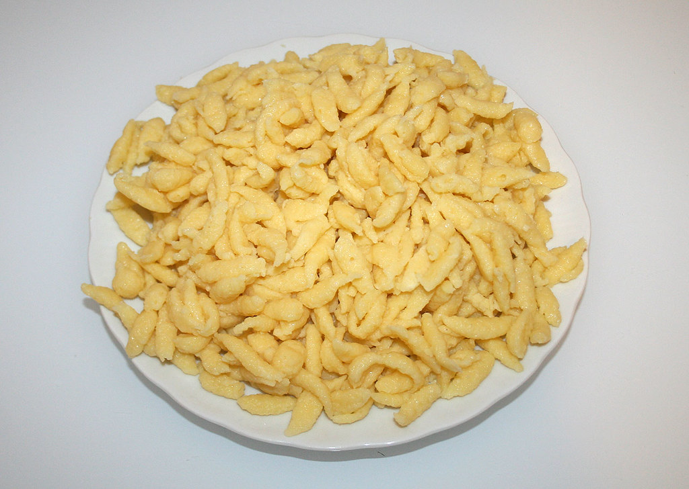

Home
Spätzle

Description
Spätzle are a type of German egg noodle. They are quite easy to make and only require very few ingredients.
In Germany, you can also buy them ready made, but nothing beats self made Spätzle.
You can use them in a variety of dishes like Kässpätzle, or as a side to meat and a nice sauce.
There are different kinds and different methods of preparation. For the one I am describing, you will need a Spätzlehobel to form the Spätzle.
Ingredients
- 5 eggs
- 1 dash sparkling water
- 1 tsp salt
- flour
Steps
- Mix the eggs with the salt and sparkling water.
- Add flour to the mixture. How much you ask?
- You are German: Until your ancestors tell you to stop.
- You are not German: Until the dough has a very thick consistency, but not too thick or it will be harder to get it trough the Spätzlehobel.
May the Spätzlegods be with you.
- Bring salty water in a large pot to a boil. When it boils, put your Spätzlehobel on top of the pot and add some dough to it.
Use the scraper of the Spätzlehobel to press the dough through the holes into the hot water. Let the Spätzle boil in the water and remove them from the water.
- Repeat until all your dough is gone.